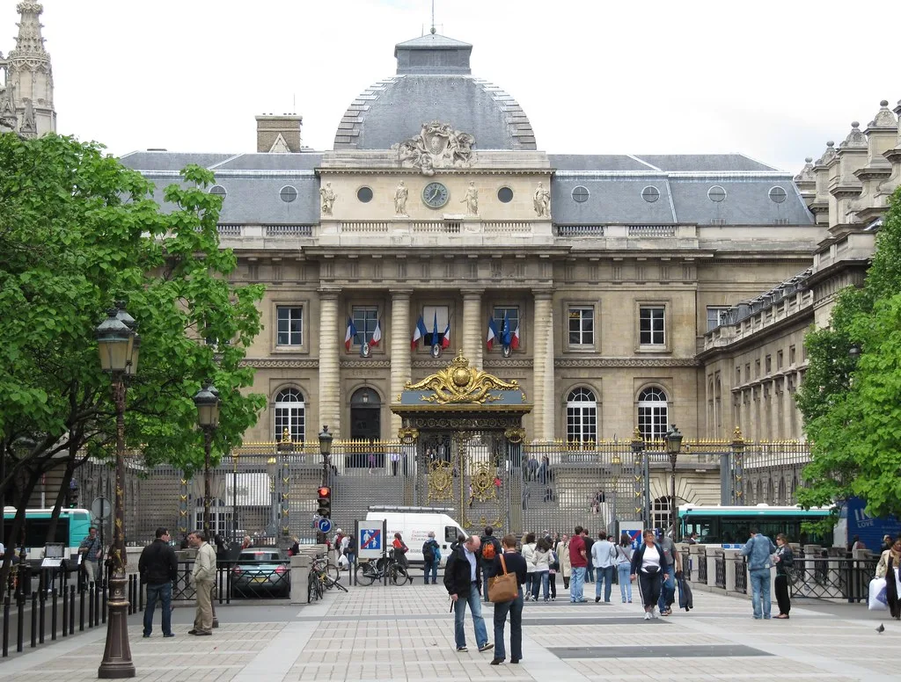
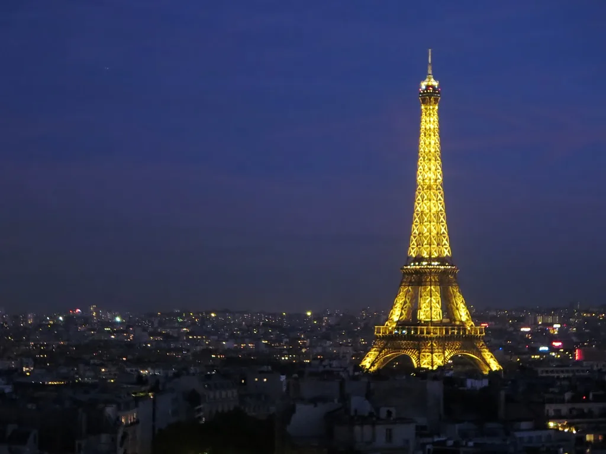

이재명 대통령, 6~9일 프랑스 국빈방문…마크롱과 '뤼미에르 서밋' 공동주재
이재명 대통령이 6일부터 9일까지 3박 4일 일정으로 프랑스를 국빈 방문한다. 에마뉘엘 마크롱 프랑스 대통령의 초청에 따른 것으로, 지난 4월 마크롱 대통령이 방한했을 때 이 대통령을 국제 영화·영상 정상회의인 '뤼미에르 서밋' 공동의장으로 초청하면서 함께 국빈방문을 제안한 데서 성사됐다. 국빈방문은 상대국이 외국 정상에게 제공하는 최고 수준의 예우로, 두 나라가 관계에 부여하는 무게를 상징적으로 보여주는 형식이다.
대통령실이 공개한 일정을 보면 이 대통령은 6일 저녁 프랑스에 도착한 뒤 7일 남부 생폴드방스에서 열리는 뤼미에르 서밋에 마크롱 대통령과 공동의장 자격으로 참석한다. 같은 날 저녁에는 마크롱 대통령 내외가 주최하는 국빈만찬이 예정돼 있다. 8일에는 파리에서 정상회담을 갖고, 마지막 날인 9일에는 프랑스 하원의장 면담과 동포 오찬 간담회, 마티아스 코먼 경제협력개발기구(OECD) 사무총장 접견 등을 소화한 뒤 귀국길에 오른다.

이번 방문의 첫 무대인 뤼미에르 서밋은 영화 산업의 미래를 논의하기 위한 국제 회의다. 이 대통령과 마크롱 대통령이 공동으로 회의를 주재하며, 인공지능(AI)이 콘텐츠 창작에 미치는 영향과 극장 산업의 앞날 등이 주요 의제로 다뤄질 전망이다. 세계적으로 위상이 높아진 한국 영화·드라마·음악 등 이른바 K콘텐츠의 존재감을 고려하면, 한국 정상이 이 자리를 프랑스 정상과 함께 이끄는 것 자체가 문화 분야 외교의 상징적 장면으로 읽힌다.
8일 정상회담에서는 안보와 경제는 물론 AI·우주·원자력·바이오 등 첨단산업 분야의 협력을 구체화하는 방안이 논의될 것으로 보인다. 대통령실 고위 관계자는 원자력 분야와 관련해 우라늄 공급 협력 강화 등에서 "구체적인 진전을 위해 노력하고 있다"고 밝힌 바 있다. 두 정상은 지난 4월 회담에서도 원자력 협력 확대와 호르무즈 해협 수송로 확보를 위한 협력 등에 공감대를 이룬 만큼, 이번에 한층 진전된 결과물이 나올지가 관전 포인트로 꼽힌다.

한국과 프랑스는 전략적 동반자 관계를 맺고 있으며, 정부는 이번 방문을 계기로 안보·경제·과학기술·문화와 인적 교류에 이르는 폭넓은 분야에서 협력의 내실을 다진다는 구상이다. 통상 환경의 불확실성이 커지고 공급망 재편이 화두로 떠오른 상황에서, 유럽의 핵심 국가인 프랑스와의 협력 강화는 한국의 대외 관계 다변화라는 측면에서도 의미가 있다.
프랑스는 유럽연합(EU) 회원국 가운데 한국과 교역·투자 규모가 큰 편에 속하며, 항공우주와 방위산업, 원자력, 바이오·제약, 명품·소비재, 농식품 등 여러 분야에서 협력 관계를 이어 왔다. 이번 국빈방문에는 경제 분야 인사들도 동행해 현지 기업·기관과 별도의 협력 논의를 진행할 것으로 전해졌다. 정상 간 합의가 실제 계약이나 공동 연구로 이어지려면 방문 이후의 실무 협의가 뒷받침돼야 한다.
정치권과 외교가는 이번 방문에서 어떤 협력 성과가 문서 형태로 구체화될지에 주목하고 있다. 정상회담 이후 공동성명이나 개별 협력 약정이 발표될 경우 후속 이행 과정이 뒤따르게 되며, 그 결과가 실제 산업·기술 협력으로 이어질 수 있을지가 관건이다. 이 대통령의 이번 일정은 다자 무대와 양자 외교를 함께 아우르는 형태로 짜여 있어, 취임 이후 이어져 온 정상 외교 행보의 연장선에서 평가받을 것으로 보인다.